Activity: Model an oil pan
This activity demonstrates the process of constructing an automotive oil pan using treatment features.
Apply several types of features to a basic solid.
-
Drafted faces
-
Rounds
-
Thin wall
Click here to download the activity file.
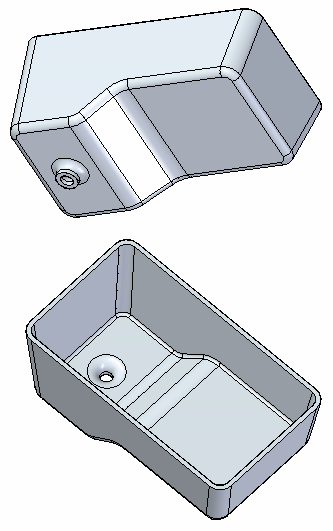
You will place draft, round and thin wall treatment features on a basic solid model.
-
Open the part file oil_pan.par.
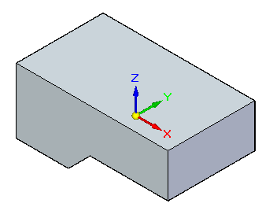
Choose the Draft command.
Select the top face as the reference plane. The faces draft with respect to this face.
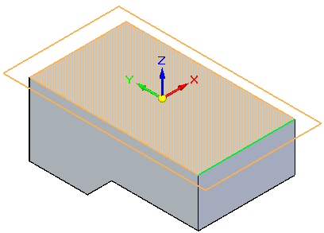
To specify the faces to draft, select All Normal Faces from the Draft command bar list. Select on the side of the part.
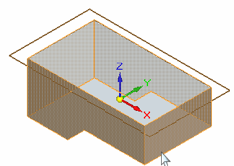
Type 5 degrees into the dynamic input box and select the draft arrow to define the direction as shown.
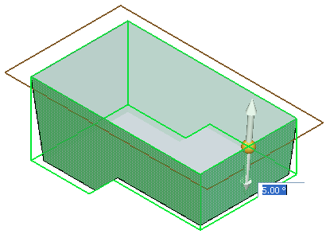
Right-click to accept this angle and direction.
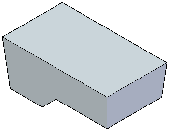
Create a drain for the pan by extruding a circle from the bottom face. Sketch a circle centered on that face and dimension as shown.
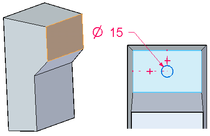
Select the region formed by the circle and extrude it 8 mm.
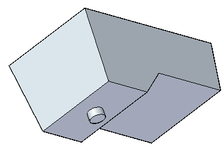
Using the Round command, select the two underside edges and give them a radius of 15 mm. Right-click to accept.
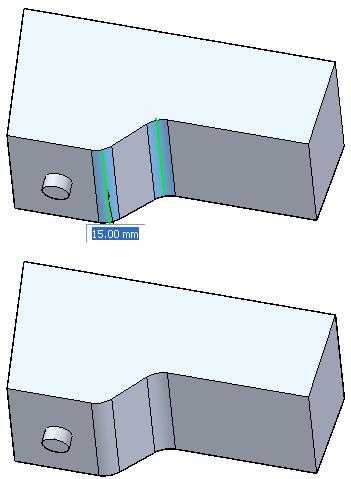
Round the vertical edges with a radius of 10 mm. Right-click to accept.
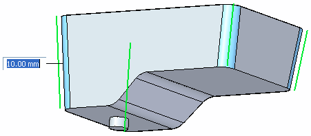
Select the chain along the bottom, as well as the edge of the drain. Define a radius of 5 mm and then right-click to accept.
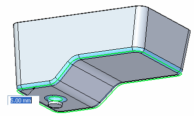
Press Escape.
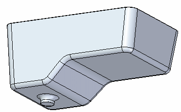
Choose the Thin Wall command.
Enter a thickness of 3 mm into the dynamic input box. Remove the top face and the capping face for the drain. Define an interior thin wall.
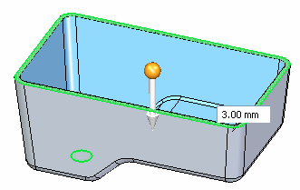
Right-click to accept and finish.
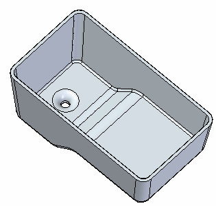
Save and close this part.
In this activity you applied the draft, round and thin wall treatment features to a solid model. These features are commonly used in the design of solid models.
-
Click the Close button in the upper-right corner of this activity window.